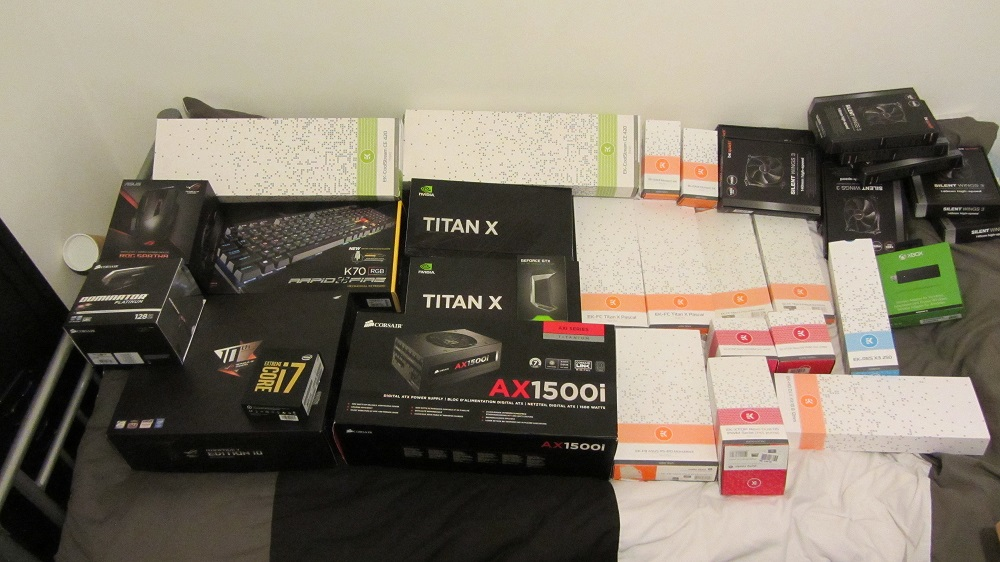
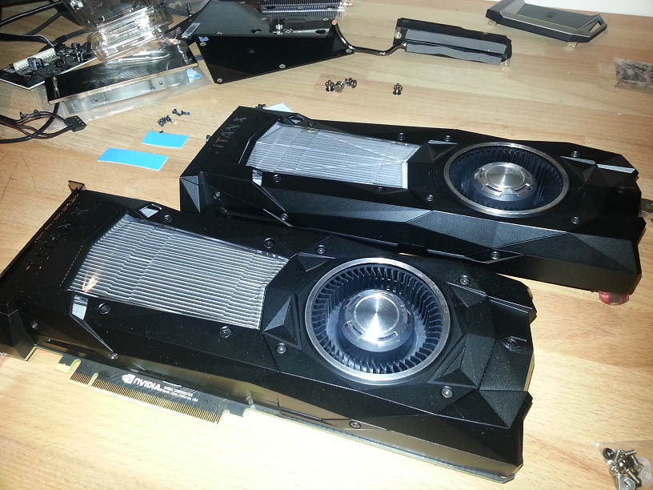
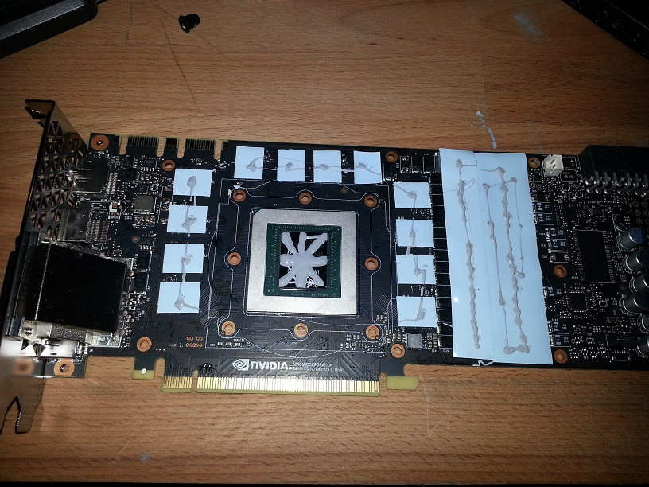
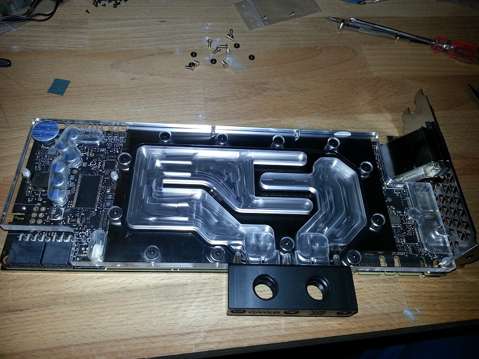
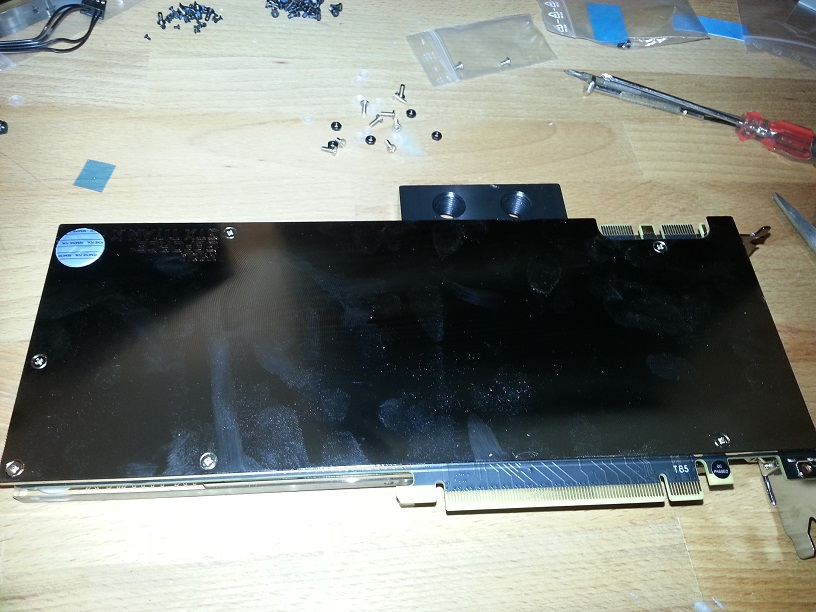
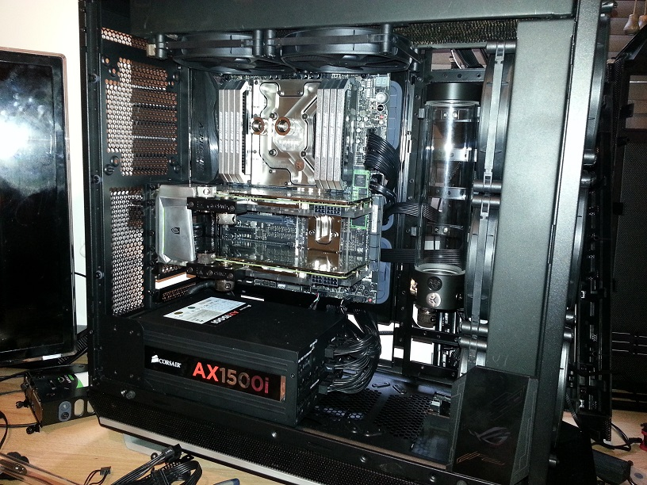
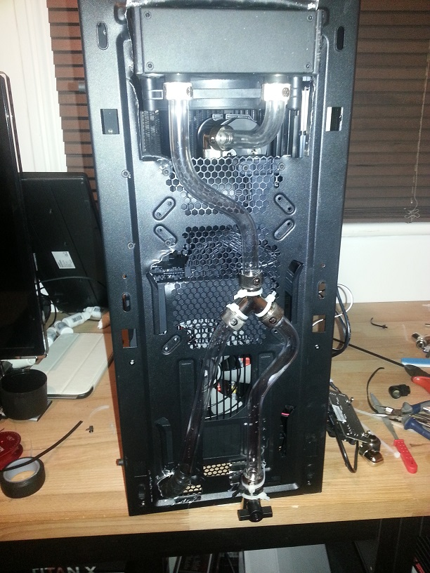
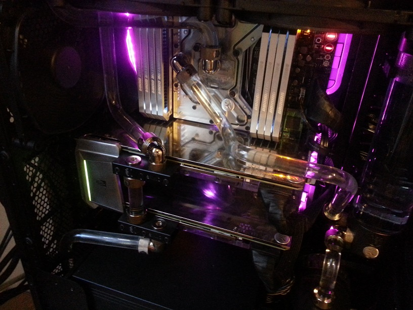
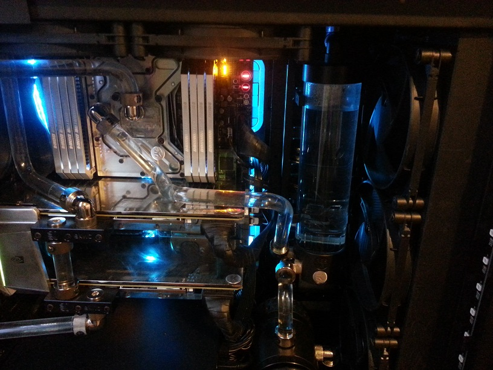
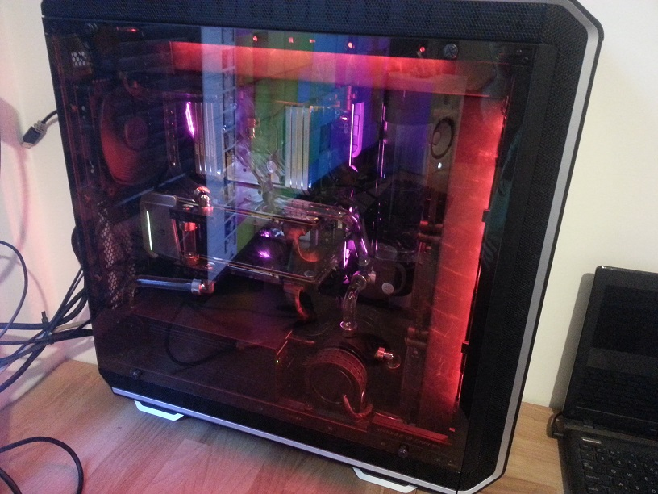

PC Build
Specs: Intel i7-6950X cpu, Asus Rampage V Ed 10 motherboard, 128gb
Dominator Platinum ram, dual Nvidia Titan X pascal gpu's, nvidia HB
sli bridge, Corsair AX1500i psu, Asus ROG Spatha mouse, 1tb Samsung
SM961 NVme m.2 ssd, 10tb Seagate baracuda hdd, Corsair k70 RGB
rapidfire keyboard, Be Quiet Dark base pro 900 case, EKWB
waterblocks and back plates (motherboard and gpus), EKWB custom
cooling loop (dual 420mm radiators, dual D5 pumps in series for
redundancy, single 250mm reservoir, 12/16mm hard acrylic tubing), 12
Bequiet 140mm silent wings 3 pwm fans, 55" Samsung curved 4K
screen".

Installing water blocks on Titan Pascal GPU's



Matching backplates

Motherboard monoblock installed, along with RAM, GPUs and PSU. Ready
for piping

Bottom of case modded to fit second 420mm radiator, Drain tap
installed for easy flushing

Tried many water colours but settled on clear distilled water (with
biocide agent)


Close up of pumps

Tempered glass panel installed
